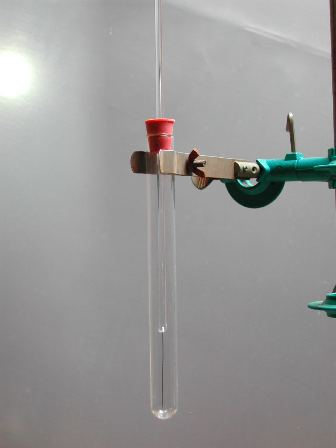
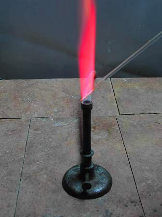
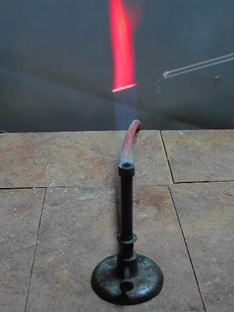

Guardate cosa m'ha regalato la gentile signorina Flavia per il mio compleanno: un bel filetto di platino nuovo!
Con la sua bacchettina e il tappetto che s'innesta giusto nella provetta di protezione, come un pugnale nel fodero pronto a cavare il sangue colorato di qualche elemento della tavola periodica.
Ultimamente ero costretto (ho vergogna a dirlo!) a vedermi le fiamme con un orrendo e obbrobrioso filaccio di nichel-cromo che lascia il tempo che trova, sempre sporco, ossidato, corroso, inservibile per le perle al borace.
Accettabile solo nel primo quadrimestre del primo anno di chimica, e poi buono solo per farci le resistenze del ferro da stiro, non per interloquire con un glorioso e nobile bunsen!
Ormai chi mi conosce sa della mia "dedizione" (chiamiamola così...) alla chimica, specificamente quella sperimentale, e così mi son trovato questo pensierino gradito.
Vogliamo provarlo subito?
Via di corsa, solo con un fugace imbarazzo della scelta del primo candidato alla tortura del fuoco: ma non ho esitazioni... sarà il bromuro di stronzio!
Ho questo sale da talmente tanto tempo e senza averlo mai usato che mi sembra l'occasione perfetta per dare un attimo di celebrità anche a questa bella sostanza, usata nella farmacopea di mille anni fa.
Vai SrBr2, sacrificati e fatti onore sul vecchio bunsen!


Il filo nel suo "fodero" - Il filo pulito nella fiamma: nessuna colorazione


Il filo con una traccia di SrBr2: l'inconfondibile rosso dello stronzio
Alla fine una bel palleggio sterilizzatore tra fiamma e HCl ed il nobile metallo è bello pulito e lucente come nuovo, pronto, chissà quando, a ionizzare nuovamente qualche altro catione... pirocromogeno!
2 commenti